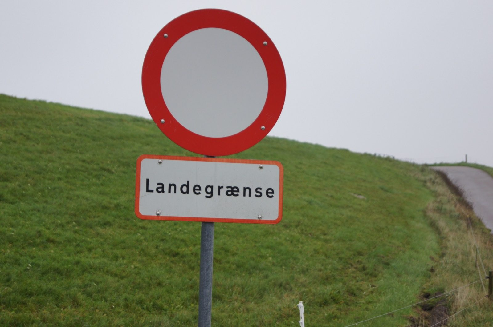

Kapitel 16 – Fred, frihed og nye grænser
Til Noldes fortrydelse genforenes det nordlige Slesvig med Danmark, og den nye grænse ligger nu syd for Utenwarf; Nolde er på papiret blevet dansker.
Nolde maler, rejser sammen med Ada Europa rundt og udstiller sine billeder, blandt andet vises hans religiøse billeder på en samlet udstilling i Lübeck.